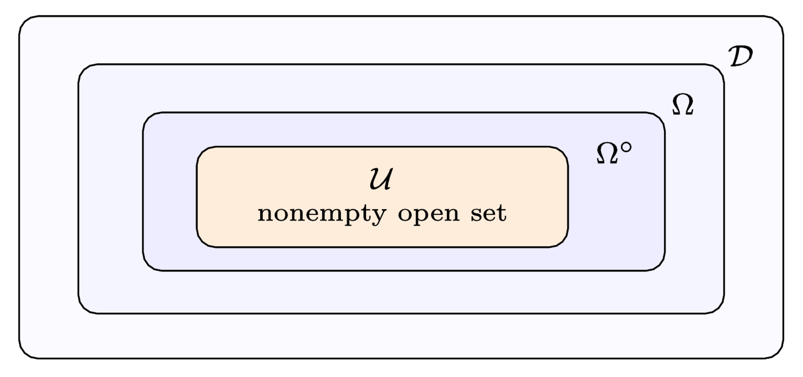

Provides a Lean 4 formalization of the rank-one Lyapunov spectral identity in an accompanying repository, alongside computer-algebra and numerical checks.
Abstract
We prove the rank-one Lyapunov spectral identity recorded as Problem 9.1 in the 2004 collection of unsolved problems in mathematical systems and control theory. Let $P,Q,R$ solve the coupled discrete Lyapunov and Sylvester equations associated with $A$ and its rank-one update $A_2=A+vw^\top$. When the displayed inverses exist, we show that $P^{-1}RQ^{-1}R^\top$ and $(I+PQ)^{-1}$ have the same characteristic polynomial. A rank-one determinant factorization of the equation for $Q$ produces a scalar bilinear kernel. Evaluating it at the eigenvalues of $A$ and at their reciprocals gives $RQ^{-1}R^\top=BQ^{-1}B=P-BPB$, after which the two target matrices are the same two factors in opposite order. Polynomial continuation extends the identity from a nonempty open set of admissible systems to the full admissible domain and yields a determinant corollary without stability assumptions; when the spectra of $A$ and $A_2$ are disjoint, $Z=b(A)^{-1}P$ gives an explicit similarity. In the Schur-stable realization setting, the result recovers the associated principal-angle and past/future canonical-correlation spectra.
Problem
Problem 9.1 of the 2004 collection of open problems in systems and control asks whether P^{-1}RQ^{-1}R^T and (I+PQ)^{-1} have the same eigenvalues. Here P, Q, R solve the coupled discrete Lyapunov and Sylvester equations for A and its rank-one update A+vw^T. De Cock and De Moor checked the identity numerically and proved it for n=1.
Approach
A rank-one determinant factorization of the Lyapunov equation for Q yields a scalar bilinear kernel. Evaluating the kernel at the eigenvalues of A and at their reciprocals gives RQ^{-1}R^T = BQ^{-1}B = P - BPB. The two target matrices then become products of the same two factors in reverse order, so the AB–BA principle applies. Polynomial continuation from a nonempty open set extends the identity to the full admissible domain, and a Lean 4 formalization accompanies the proof.

Figure 3: The four domains have different jobs: \mathcal{U}\subset\Omega^{\circ}\subset\Omega\subset\mathcal{D} . The divided kernel calculation starts on \mathcal{U} , the theorem extends to \Omega , the explicit similarity extends to \Omega^{\circ} , and the denominator-cleared polynomial identity extends to \mathcal{D} .
Results
The characteristic-polynomial identity holds on the full natural domain, with a determinant corollary that needs no stability assumptions. When the spectra of A and A_2 are disjoint, Z=b(A)^{-1}P gives an explicit similarity. In the Schur-stable case the principal-angle and canonical-correlation spectra are recovered as explicit matrix spectra.